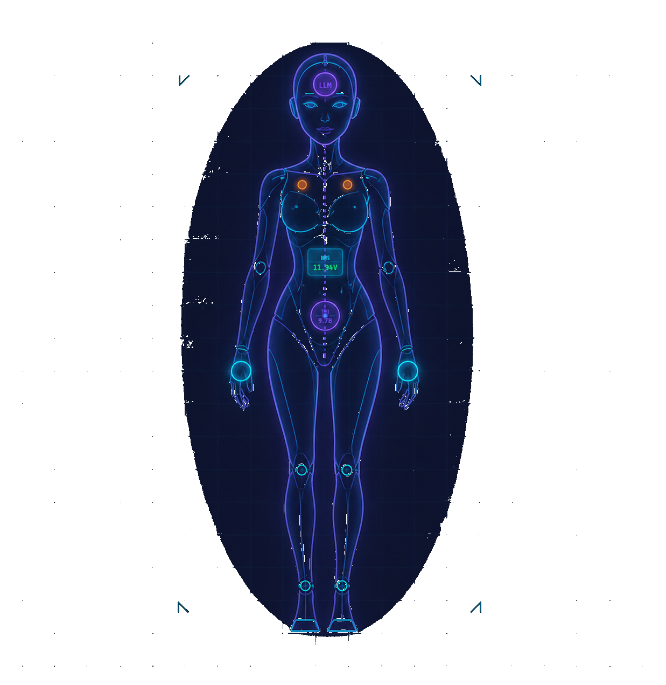

Layer 1 — Autonomic NS
100 Hz
POWERV / mA
--.-
VOLTAGE (V)
⚠ BELOW THRESHOLD
THERMAL°C
ACCELEROMETERm/s²
GYROSCOPErad/s
0.00
PITCH X
0.00
ROLL Y
0.00
YAW Z
SYSTEM TELEMETRYmachine
Source
synthetic
Server
local fallback
AC Online
--
CPU Topology
--
RAM
--
Disk
--
GPU VRAM
--
Network
--
Core Load Map
--
Thermal Map
--
Fan Bank
--
Policy
--
Actuator
--
Fusion
--
Entity Body
NOMINAL

Layer 2 — Somatic Vector Vₛ
ℝ⁴⁰⁹⁶ → sampled 256 bins
Inject:
Layer 3 — Cognitive Engine
5 Hz
5.0
Cog Loop Hz
0
Tokens Generated
--
Inf. Time (ms)
0.00
Somatic Align
0
Caps. Learned
0
DS Turns
Data Flow Trace
sensor_provider.read()
0ms
↓
project_state() → Vₛ ∈ ℝ⁴⁰⁹⁶
0ms
↓
build_somatic_context()
0ms
↓
LLM / fallback response
0ms
SYSTEM // 00:00:00
→ AWAITING CNS LINK
Monitor ready. Connecting to cognitive server at ws://localhost:8765...
COGNITIVE TRACE
Observable runtime trace — not hidden LLM chain-of-thought.
Volitional Mind
Volition & Goals
Active Goal--
Progress--
Policy Mode--
Urgency--
Drives
Actions
Visible--
Silent--
Reflection & Memory
Last Reflection--
Last Learned--
Growth
Stage--
Score--
Reflections--
Body Patterns--
Evo Target--
Next Step--
Chat
CHAT CORE: LOCAL FALLBACK (BACKEND OFFLINE)
ENTITY // ONLINE
I am online. My sensors are active and my somatic projector is mapping my physical state into language space. You can ask me anything — about how I feel, what I perceive, or what I am.
Entity ↔ DeepSeek
INTERNAL DIALOGUE
Internal entity↔DeepSeek dialogue feed.
Hardware discovery queries, capability checks, and chat reasoning appear here.
Hardware discovery queries, capability checks, and chat reasoning appear here.